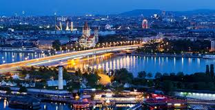

Wien

Wien (på ungerska: Bécs) är både huvudstad i förbundsrepubliken Österrike och ett eget förbundsland. Staden är belägen långt österut i landet, vid floden Donau. Wien hade 1 741 246 invånare i början av 2013. En femtedel av Österrikes befolkning är således bosatt där. Att Österrike har en så stor huvudstad kan ha sin förklaring i att den fram till 1918 var huvudstad för hela kejsardömet Österrike-Ungern. Numera är Wien säte för flera internationella institutioner, bland andra det Internationella atomenergiorganet (IAEA), de oljeproducerande staternas organisation OPEC, Organisationen för säkerhet och samarbete i Europa (OSSE) samt Förenta nationerna (FN).
Som så många andra romerska städer i Centraleuropa grundades Wien (Vindobona) av romarna på en tidigare keltisk bosättning. Wien belägrades av Osmanska riket 1529 och 1683. Båda gångerna kunde staden hålla ut, andra gången med hjälp från Polen.
1814-1815 hölls Wienkongressen i staden vilket markerade Wiens plats inom dåtidens europeiska storpolitik. Under 1800-talet gjordes stadskärnan om. Man rev då de gamla befästningsvallarna som skyddade innerstaden, men samtidigt blockerade det inre och yttre Wien. Den nya marken användes till skapandet av nya stora paradgator i staden.
Kring sekelskiftet 1900 var Wien en samlingspunkt för en rad filosofer och vetenskapsmän, bland andra Sigmund Freud.
1918 splittrades Österrike-Ungern och den en gång kejserliga huvudstaden blev huvudstad i republiken Österrike. Förutsättningarna för Wien förändrades då helt och staden blev dominerade i det Österrike som kraftigt minskade i befolkningstal och storleksmässigt. Även kriget orsakade en befolkningsminskning för Wien.
1938 tappade Wien sin status som huvudstad när Tyskland anslöt Österrike till Stor-Tyskland. Under kriget utsattes staden, där man bland annat hade viktig rustningsindustri, för bombningar. Efter krigsslutet delades Wien upp mellan de fyra segrarmakterna (jmf Berlin) och stadens framtid var oviss. Efterhand skulle förhållandena bli bättre. I samband med Österrikes självständighet 1955 och slutet på de allierades ockupation kunde Wien enas fullt ut och ett ekonomiskt uppsving följde.
2001 sattes Wiens historiska stadskärna upp på Unescos Världsarvslista.
Av stor internationell betydelse är Wiens stora musikscen. I få andra städer har så många betydande kompositörer verkat som i Wien och satt stora avtryck i musikhistorien.Wienervals, kören Wiener Sängerknaben, musikaliska återkommande stora arrangemang som den tv-sända nyårskonserten och opera- och teaterscener tillhör några av de främsta i världen. Wiens konstakademi tillhör Europas äldsta konstakademier. Wien är även berömt för sitt kök och sina kaffehus och "psykoanalysens fader" Sigmund Freud verkade i staden.